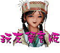

【仙剑角色连连看】作者～ 水灵珠 Tue, 05 Aug 1997 00:13:40
林月如 --- 梁小冰
【仙剑角色连连看】作者～ 水水 Sat, Aug 1997 17:53:55
连连看：
【仙剑角色连连看】作者～ Y.C. Sun, 27 Jul 1997 09:04:57
蛇妖男：徐少强
【仙剑角色连连看】作者～ a0714 Thu, 24 Jul 1997 10:59:14
李逍遥－古天乐【英俊潇洒】
【仙剑角色连连看】作者～ 死神本家 Thu, 24 Jul 1997 12:29:58
我觉得月如很像Final Fantasy VII的TIFA
【仙剑角色连连看】作者～ Y.C. Tue, 22 Jul 1997 15:06:11
婶 婶：文 英
【仙剑角色连连看】作者～ Joshua Mon, 21 Jul 1997 01:18:01
看了无责任企划写的旷世奇文之后，不由觉得有些话想说说。
不知他是故意忘了最重要的人物，还是想给玩家想像呢？ＯＫ
李逍遥－李连杰【因为他身手矫健，而且看起来木讷老实，成
拜月教主－李×辉【就满肚子计谋和十足表面工夫，这一点倒
灵儿－李若彤【气质上有些相同，都很不食人间烟火的样子】
阿奴－朱茵【活泼俏皮逗人喜爱】
林月如一时还没想到，容后再叙吧！
【仙剑角色连连看】作者～无责任企划
此为个人意见，不代表本公司立场，且随时都有变动的可能。
婶 婶：罗兰、方芳
【仙剑主角星座大剖析】作者～欧阳宇峻
大家好，我是笨笨牛，是刚好寻到这的。
以上言论纯属个人猜测~~~~
【我玩仙剑奇侠传】作者～林佳亿
说起玩【仙剑奇侠传】已是一、二年前的事了。等待此游戏，可是二、
当时我的电脑还未升级，没有音效卡，没有光驱。但在某年的七月一
在那时，我每天至少花三、四个小时玩【仙剑】，为了是想再继续发掘
之前，有很多玩家抱怨【仙剑】的迷宫太复杂，太冗长，拜月教主太难
【我玩仙剑奇侠传】作者～詹胜凯
本人大概已将这十数载的娱乐生活，完全贡献给ＧＡＭＥ了吧！从小学
由于是第一次玩ＲＰＧ，居然对当时小小国一的心灵，造成相当大的震
因为国二暑假已经要升国三了，家人全力反对我再玩ＧＡＭＥ，要有一
可是好死不死，在国二暑假居然无意看到『软体世界』上登有『狂徒』
通常预售广告在一、两个月后便会出片，虽然上面没有写正式出片日期
果然，七月一日上市ＣＤ版，班上同学只有装作不知道继续Ｋ书，只有
我以玩ＲＰＧ的最佳模式来玩仙剑，所谓最佳模式，是以一天二十小时
前面提过受仙剑吸引的主要原因是美工，没想到一探真面目时，那突破
（摘自９６年７月２日来信）
【我玩仙剑奇侠传】作者～chiou
对于仙剑，感情世界相信是吸引很多人的共通之处吧！而我对于这一部
一反大团圆的传统法则，而以悲剧贯穿整个游戏，尚书府的彩依，原本
原本以为这样的故事，在游戏后半段，应该就会没有了吧！在月如讲了
祈雨的成功、拜月教主的败亡，是否就意味着圆满的结局呢？灵儿拥有
整个故事给人的感觉只有一个悲字，但当最后的一瞬那，当逍遥见到了
也许是这样的结局，才让我对这个游戏如此喜爱。留给人更大的想像空
阿奴 --- 徐熙娣
盖罗娇 --- 徐熙缓
彩依 --- 徐若萱
姜婉儿 --- 酒井法子
灵月 --- 苏慧伦
阿桃 --- 梁咏琪
韩梦慈 --- 范晓宣
女飞贼 --- 蔡少芬
丁香兰 --- 陈慧琳
丁秀兰 --- 朱茵
阿 香 --- 滕丽明
李逍遥：焦恩俊
灵儿：岳羚
月如：张曼玉
阿奴：张庭
婶婶：萧芳芳
酒剑仙：马景涛
青儿：关之琳
巫王：刘德凯
姥姥：文英
阿香：季芹
云姨：刘雪华
晋元：宋达民
彩依：俞小凡
姬三娘：张敏
巫后：陈美凤
毒娘子：慕钰华
十年前的姥姥：谭艾珍
巫王：李立群
石长老：洪流（阿桐伯是也）
酒剑仙：周明增（济公是也）
苗人头领：陈松勇
剑圣．太师叔：林正英
李逍遥：郑少秋或马景涛
赵灵儿－袁咏仪【柔中带刚】
林月如－李嘉欣【外刚内柔】
阿奴－朱茵【活泼可爱】
巫王－徐少强【稳健深情】
巫后－郑裕玲【无怨无悔】
拜月教主－张兆辉【野心盖世】
酒剑仙－郑少秋【游戏人间】
刘晋元－吴奇隆【文质彬彬】
彩依－杨采妮【温柔体贴】
阿桃－刘若英【蕙质兰心】
宋贺文－罗嘉良【情痴无怨】
白长老－狄龙【忠心为主】
盖罗娇－刘嘉玲【忠心为主】
也很像"乱马1/2"的久远寺右京
也很像"美少女战士"的火星神
也有一点像"天地无用!"的津明魅
也有一点像"神剑闯江湖"的高荷惠
也很像"侍魂"里的罗将神
也很像"KOF"的神乐千鹤
也很像我在"京都PLAZA顶楼吃早餐"遇到美女(我是指背面)
反正都是美女就对了.
圣 姑：阿匹婆
天鬼皇：卜学亮
书中仙：冯翊纲．陈立华
酒剑仙：林正英
镇狱明王：午马
李逍遥：马景涛
阿 奴：张惠妹．柳翰雅
丁香兰：徐熙媛
丁秀兰：徐熙娣
盖罗娇：徐华凤
王小虎：郝邵文
刘晋元：叶 童
张四哥：庚澄庆
！闲话少说，以下就是我个人之意见，纯粹为发纾个人想像，
绝无贬抑旁人之意，就请各位不必过于认真，Ｔａｋｅ ｉｔ
ｅａｓｙ！
龙身手也不坏，可惜鼻子微大了点】
是有点像让咱们就像主角一般被耍得团团转】
韩医仙：张建复
阿 香：季 芹
天鬼皇：黄仲昆、楼学贤
阿 桃：狄 莺
彩 依：俞小凡
书中仙：曾志伟
太师叔：徐少强
莺莺夫人：张玉燕
姜婉儿：岳 翎
木道人：刘 洵
云 姨：赵雅芝
圣 姑：文 英
巫 王：任达华
石长老：陆一龙
刘晋元：温兆伦
宋贺文：宋逸民
姬三娘：李美凤
盖罗娇：戈伟如
柳媚娘：周海媚
毒娘子：潘仪君
姥 姥：小凤仙、刘秀雯
王小虎：释小虎
韩梦慈：刘若英
林天南：
镇狱明王：
拜月教主：
灵 月：
巫 后：
张四哥：
我觉得照李逍遥的那种【花言巧语】的个性，他一定是双鱼座ＯＲ双子座。
而像月如姐姐那种粗暴又疑情的个性，可能是白羊或是狮子座。而像灵儿姐
姐最有可能的星座，一定是最温柔最又有家庭观念的---巨蟹座。ＡＮＤ 阿奴
妹妹则是射手或宝瓶座的。
三年前的事了，虽已隔了很长的时间，但其中的细节，到现在我还记忆犹新
。
日。我毫不犹豫地买下光盘版，想等到电脑升级后，才来痛快完玩一番。最
后终受不了诱惑，于是和同学合买磁片版，没有美妙的音乐，震撼的音效，
只要有丰富的剧情，华丽的战斗画面，也不枉多花钱买此游戏。
故事的剧情。后来在结尾看到月如被石头压死，灵儿被大水冲走，阿奴看着
逍遥远去，让我非常感伤。但以上的剧情不是让我感伤的主要理由，我玩【
仙剑】时，电脑萤幕的底色时常由正常的白色，转变成绿色，在一般地图或
战斗模式发生也就算了，但好死不死，偏偏在结局动画的关键时刻，却发生
此状况，让我不知是否该为剧中人物的遭遇悲伤，还是该为【绿色】的结局
画面而大哭。
打败。我觉得还好啊！我个人认为【没有永远迷路的人，只有没耐心、毅力
的人】、【没有杀不死的魔王，只有禁不起失败的人】所以，大家也不要太
责备制作小组，毕竟他们只能满足大多数人的胃口，不能满足全部人的胃口
。让我们一起来为【仙剑二】催生吧。
开始玩『玛利』、『小蜜蜂』，到了国一，开始接触ＲＰＧ是四、五年前的
『吞食天地Ⅱ』，好像是从任天堂上移植的吧！当时是『金磁片』奖出身的
。
撼，也立下终生投注于ＧＡＭＥ的誓言。四、五年之中，也玩了大大小小的
ＲＰＧ，小到『汉堂』的『风尘三侠』，大到威名一时（当然不如仙剑了）
的『软体世界』的『倚天屠龙记』，几乎在榜上的知名ＲＰＧ都玩过了，正
在玩『轩辕剑』的时候，才真正迷上所谓『中国武侠式山水ＲＰＧ游戏』当
时是国二暑假。
年的时间不能碰ＧＡＭＥ，电视除了特定一、两个节目外，很少在电视前会
有感觉，偶像明星也无法吸引我。所以一年不玩ＧＡＭＥ等于一年没有任何
娱乐。要不是有在看『乱马１／２』，也许早已经疯了也说不一定。
出了仙剑奇侠传的广告，广告内容只是四位主角的肖像、部分战斗画面，以
及地图画面，陈淑芬的那张画还没出来，却已经深深被美工吸引，心中只有
二个字，就是『完了！』
，但大概也是国三水深火热的时候，家人的压力下，只有期待慢一点出片。
没想到七月、八月、九月、十月，都过完年了还没出。心里正想，联考完马
上出版吧！班上有光驱的都这么想。
那个保送上的马上跑去买来玩。到了七月八日联考那天已经玩完了，还跑到
我的考场上去说：『好感人的悲剧！』好在我没有听到。考到最后一节社会
科，是我放弃的科目，试题的题目卷上已经被我用大大的美术空心字写上『
仙剑奇侠传』五字，监考的看一看我，觉得我很奇怪。
左右的时间来玩，一天二十小时玩怎么长的ＲＰＧ大概也只需要二、三天顶
多吧！可是我玩了一星期，主要是一些一看便知的难题，都尽量合理化的慢
慢解答，完全把自己融入主角。这种除了吃睡以外的时间都在游戏中的危险
模式，当然不是随随便便就拿出来用的。
以往风格的剧情才是仙剑真正的魅力所在。三位女主角性格的刻划，无论友
谊或爱情的描写，悲剧收场的破例，都是国产，甚至世界的水准之上。本人
高中的一位同学家中，从ＳＥＧＡ、超任、ＳＥＧＡ ＳＡＴＵＲＮ、ＰＳ
、ＳＮＫ，各式主机一应俱全。其中可怕的是ＳＮＫ以格斗（饿狼传说、侍
魂、龙虎之拳）为公司的路线，一个片子动辄一、两百ＭＢ，所以卡匣从四
、五千到八千、一万都有，他也居然买了七、八块，可见其疯狂。可是坚持
不入电脑休闲界，原因是『画面处理太慢、太差，故事内容单调。』但也对
仙剑有所好奇，好像想尝试．．．．．．．．．．．．．．。
分，爱之更是不能释手。
是可以服侍晋元一生的，就是为了她不是人，受晋元的误解，就注定要以自
己的内丹来换取刘晋元短暂的生命。而在彩依临走时，说了最后一句话：「
告诉晋元，彩依走了……。」，玩到这边，自己也不知该怎么玩下去，就静
看翩翩飞舞的蝴蝶，让自己的心绪随他浮沉吧。
：「从今以后，我们三个人又可以一起行动了」，原本让人欣慰的一句话，
却成了逃出锁妖塔的代价－死，逍遥回忆和月如一同闯荡江湖的趣事，情事
。随着时间的告别，愈加显得清晰。
拯救苗人的宿命，就如他的母亲一般，选择牺牲一己，救助众人。故事就在
这样的情景下结束了。
月如，让人将心中的悲愤，瞬间升华为无限的期待。
间吧。
[我写的旷世奇文]
 [妙招闯江湖] |
 [狂徒答客问] |
 [玩友留言版] |
 [仙剑公布栏] |
[玩友架设的仙剑网站]| [E-mail]| [大宇资讯主画面]
不得全部或局部翻印、重制或转载与修改后用于他途。 Copyright 1997 SOFTSTAR INFORMATION CO., LTD.